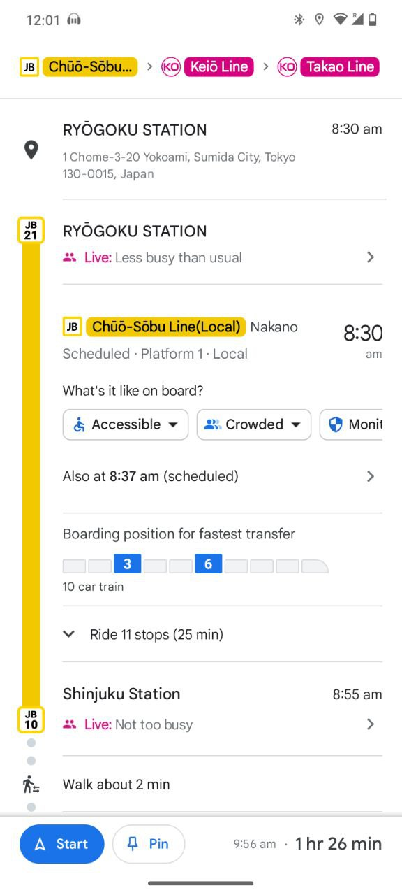
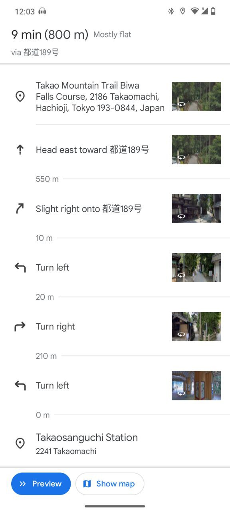

An Exciting Day Amidst Nature
We begin our journey at Ryogoku Station, Tokyo, at 8:58 AM.
Our destination is Takaosanguchi Station. We'll arrive at 10:24 AM.
Get ready for an enchanting hike through the Biwa Waterfall Trail. This route is known for its scenic beauty.
